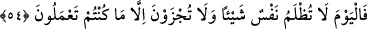

beklemeksizin hüküm ve hesap için “huzurumuzda hazır bulunurlar.”
Âşikârdır ki bu âyette diriltme (ba’s) ve haşrın Allah için çok kolay olduğu ve onların
meydana getirilmesi için Allah’ın sebeplere ihtiyacı olmadığı bildirilmektedir.
Yaratılmışlar için zor olan bir şey Allah Teâlâ için kolaydır. Çünkü yaratılmışlar gibi
O’nun sebeplerle uğraşmaya ve vâsıtaları hazırlamaya ihtiyacı yoktur. “Bir şey
yaratmak istediği zaman Onun yaptığı “Ol” demekten ibarettir. Hemen oluverir.”
(Yâsîn, 36/82)
Yine âyette sülûk ehline dünyada hâsıl olan mânevî haşra işâret vardır. Şöyle ki âlem-
i kebîr (büyük âlem) insanın sûreti ve tafsîlidir. Birinci sûra üfürülüp kıyamet koptuğu
zaman; âlemin cüzleri dağıldığı ve ikinci sûra üfürülmesiyle tekrar toplandığı, böylece
yokluktan sonra varlık meydana geldiği gibi Hakk’a âşık olan insanda güçlü bir ilâhî
cezbe ile aşk meydanına geldiği vakitte varlıkları (inniyyât) dağılır ve taayyünâtı
paramparça olur. Sonra başka bir şekilde zuhur eder ve fenâdan sonra bakâ hâsıl olur.
Bu mertebeye ulaşınca da kendi vaktinin İsrâfil’i olur. Nitekim Mesnevî’de der ki:
Dikkat et, çünkü veliler zamanın İsrâfil’idirler.
Ölüler, onlardan hayat bulup gelişirler.
Her ölünün canı, beden mezarında kefen içinde olduğu halde
Onların sesinden sıçrayıp kalkar
Buna göre uyku beden kabrinde ruhun gafletidir. Hakîkatte onu Allah Teâlâ’nın
fazlından ve kereminden başka bir şey uyandıramaz/diriltemez. Onu bu uykudan yine
Allah Teâlâ’nın celâlinden olan bir tecellîden başkası ifnâ edemez. Peygamberler (a.s.)
ve veliler Allah Teâlâ ile istîdâd sahipleri arasında ancak vâsıtadırlar. Diriliğe
kabiliyeti olmayana (İsrâfil’in sûra) üfürmesi fayda vermez.
Bütün Yunan ve Rum filozofları bir araya gelseler,
Zakkumdan bal yapamazlar
Vahşî hayvanın insan olması mümkün değildir;
Onu terbiye etmeye çalışmak boşunadır
Uğraşmakla söğüt dalından gül bitmeyeceği gibi,
Zenci de hamama gitmekle ağarmaz
İhsanı bol Allah’tan bize çok ihsanda bulunmasını niyaz ederiz.
54. Bugün hiçbir kimse en ufak bir haksızlığa uğramaz. Siz orada ancak
yaptıklarınızın karşılığını alırsınız.